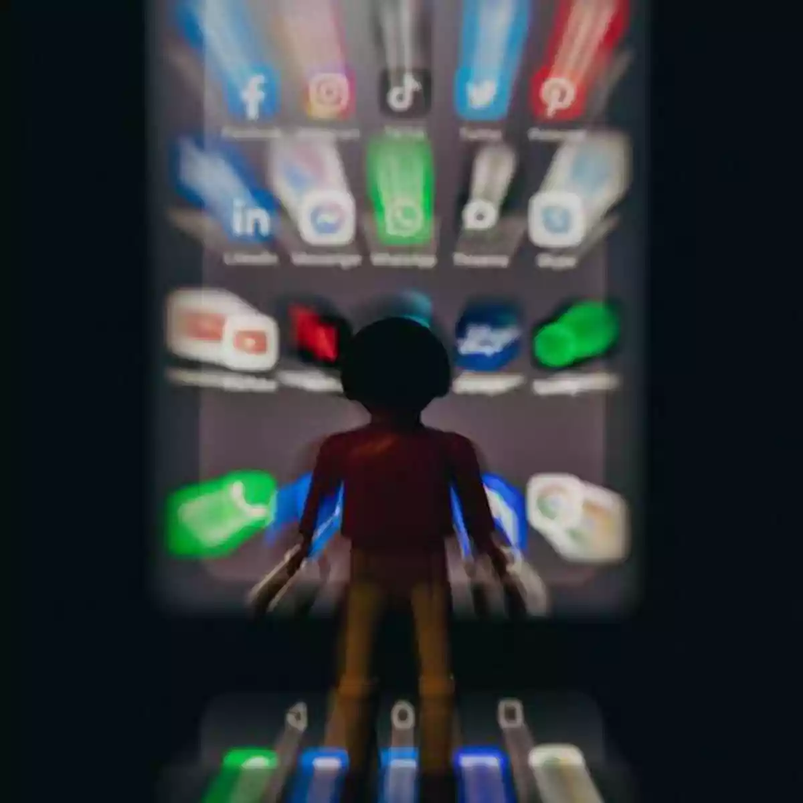
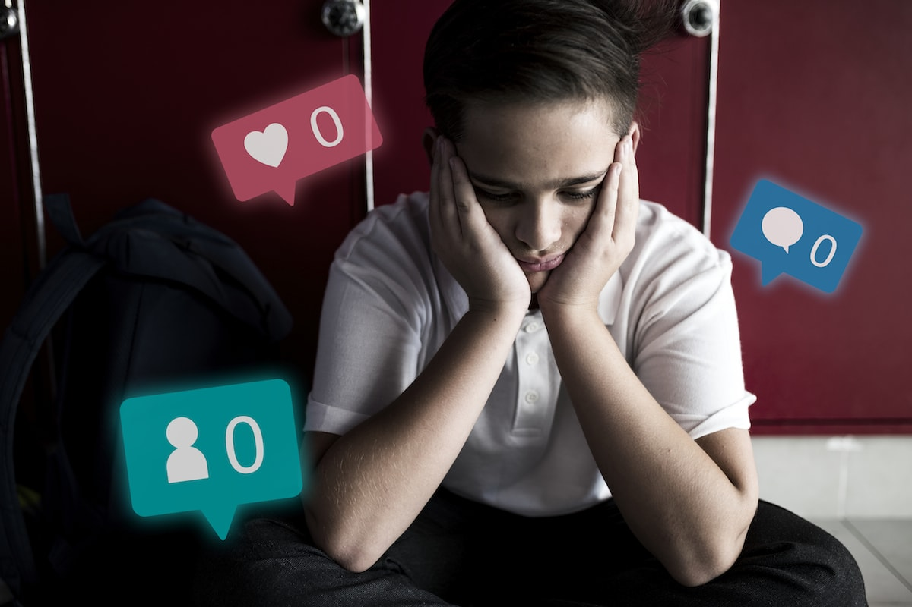

O Mal Uso da Internet e os Perigos dos Jogos Online
As redes sociais transformaram a forma como nos comunicamos e interagimos, mas seu uso inadequado pode ter consequências graves. Um dos principais problemas é a disseminação de fake news. Informações falsas se espalham rapidamente, muitas vezes sem que os usuários verifiquem a veracidade. Isso não apenas confunde o público, mas também pode influenciar decisões importantes, como em eleições ou na saúde pública. A falta de responsabilidade na hora de compartilhar informações contribui para um ambiente digital repleto de desinformação, prejudicando a confiança nas fontes de notícias e gerando divisões entre as pessoas. Outro aspecto preocupante é o impacto das redes sociais na saúde mental dos usuários. O uso excessivo dessas plataformas pode levar ao aumento da ansiedade, depressão e solidão. Isso acontece porque as pessoas muitas vezes se comparam com as vidas aparentemente perfeitas que veem online, criando uma sensação de inadequação:Além disso a pressão para estar sempre conectado e disponível pode resultar em estresse e esgotamento emocional. E fundamental que os usuários sejam conscientes do tempo que passam online e busquem um equilíbrio saudável entre a vida virtual e a real. Por fim, o cyberbullying é uma questão alarmante que afeta muitos usuários das redes sociais, especialmente jovens. A facilidade de se esconder atrás de perfis anônimos permite que agressores pratiquem assédio e humilhação sem medo de serem identificados. As consequências do cyberbullying podem ser devastadoras, levando a problemas sérios como baixa autoestima, isolamento social e até mesmo casos extremos de suicídio. Para combater esse problema, é essencial promover uma cultura de respeito e empatia nas interações online, além de educar os usuários sobre como lidar com situações de abuso

imagem o mal uso das redes socias
 Mídia
Lista de Tarefas
- Tarefa 1
- Tarefa 2
- Tarefa 3
Tabela Exemplo
| Nome | Idade |
|---|---|
| Luzia Grazielly Gomes de Carvalho | 19 |